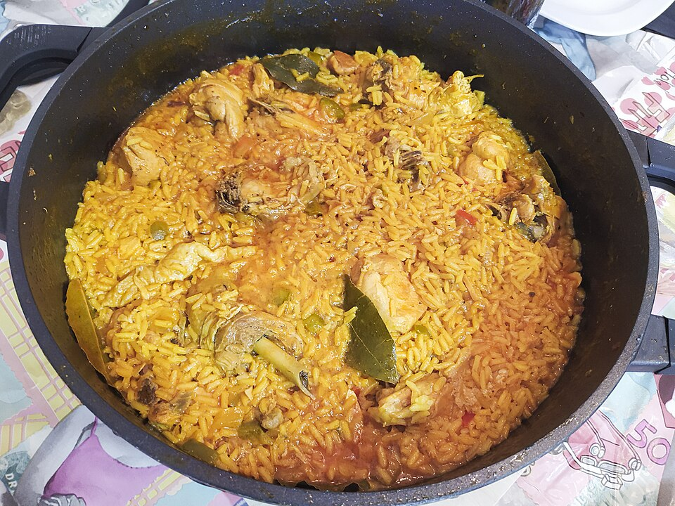

Arroz con pollo
En esta página se muestra cómo hacer un arroz con pollo bárbaro desde esta receta.

Ingredientes
Para cocinar la pechuga:
- 1 Pechuga de Pollo
- 1 zanahoria en cuadros grandes
- 2 tallos de apio en cuadros grandes
- 1 cebolla blanca en cuadros grandes
- 2 dientes de ajo aplastados
- 3 ramitas de cilantro
- 1 cucharadita de pimienta en grano
- 1 cucharada de sal
Para el arroz:
- 5 tomates rojos finamente picados
- 2 tallos de cebolla larga
- 1 pimentón rojo finamente picado
- 4 dientes de ajo machucados
- 1 taza de arvejas
- 1 taza de zanahoria en cuadros pequeños
- ½ taza de maíz tierno
- 1 taza de salsa de tomate
- 2 tazas de arroz
- sal al gusto
Preparación
Cocinar la pechuga de pollo. Colamos el líquido restante de la pechuga de pollo y este es el que vamos a usar para cocinar nuestro arroz con pollo ya que tiene mucho sabor.
En una olla grande de fondo grueso adicionamos el aceite, ahí sofreímos los tomates con la cebolla larga, ajo y los pimentones, dejamos cocinar por 5 minutos.
Agregamos el caldo de pollo con la salsa de tomate, revolvemos y cuando hierva adicionamos el arroz con las arvejas precocidas, la zanahoria y el maíz tierno. Cuando el agua se seque, revolvemos un poquito y tapamos, bajamos el fuego. Revisamos el arroz a los 10 minutos y agregamos el pollo desmechado, tapamos y dejamos cocinar hasta que se seque el arroz completamente.
Servimos nuestro arroz con pollo colombiano con papas a la francesa y un poco más de salsa de tomate.